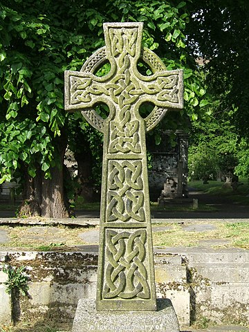

Historia i zastosowania
Historia
Obecność węzłów (w tym matematycznych) w różnych kulturach sięga aż średniowiecza lub nawet starożytności. Jednym jej przykładów są celtyckie dekoracje widoczne na zdjęciu krzyża na cmentarzu Brompton w Londynie.
Mimo tego teoria węzłów nie zaczęła się rozwijać do XIX wieku, kiedy lord Kelvin zaproponował swoją teorię budowy materii. Według niego przestreń była wypełniona substancją zwaną eterem, a każdy atom danego pierwiastka był konkretnym węzłem znajdującym się w eterze. Okazała się ona błędna, lecz zapoczątkowała ona badania licznych matematyków nad węzłami.
Kurt Reidemeister w 1926 roku udowodnił, że równoważność węzłów można sprowadzić do tego, czy diagram jednego z nich można w określony sposób przekształcić w diagram drugiego, a w podobnym czasie James W. Alexander odkrył wielomian nazwany jego nazwiskiem, który jest niezmiennikiem węzłów. W 1984 r. Vaughan Jones odkrył drugi wielomian będący niezmiennikiem, znany jako wielomian Jonesa i będący bardziej użyteczny niż wielomian Alexandra, co przyczyniło się do tego, że 6 lat później otrzymał Medal Fieldsa.
Zastosowania
Obecnie teoria węzłów jest stosunkowo dynamicznie rozwijającym się działem matematyki, dzięki czemu odkryto jej powiązania z różnymi innymi dziedzinami. Jest ona bowiem przydatna w reszcie topologii lub w kryptografii, czyli dziale matematycznyki zajmującym się szyfrowaniem wiadomości. Oprócz tego węzły możemy odnaleźć w biologii, a konkretnie w złożonych strukturach białek lub kwasów nukleinowych. Przykładowo, DNA to cząsteczka o budowie podwójnej helisy, która jest ściśle upakowana w jądrze każdej komórki. Genetycy odkryli, że może ona tworzyć struktury, które można opisać jako matematyczne węzły lub sploty.